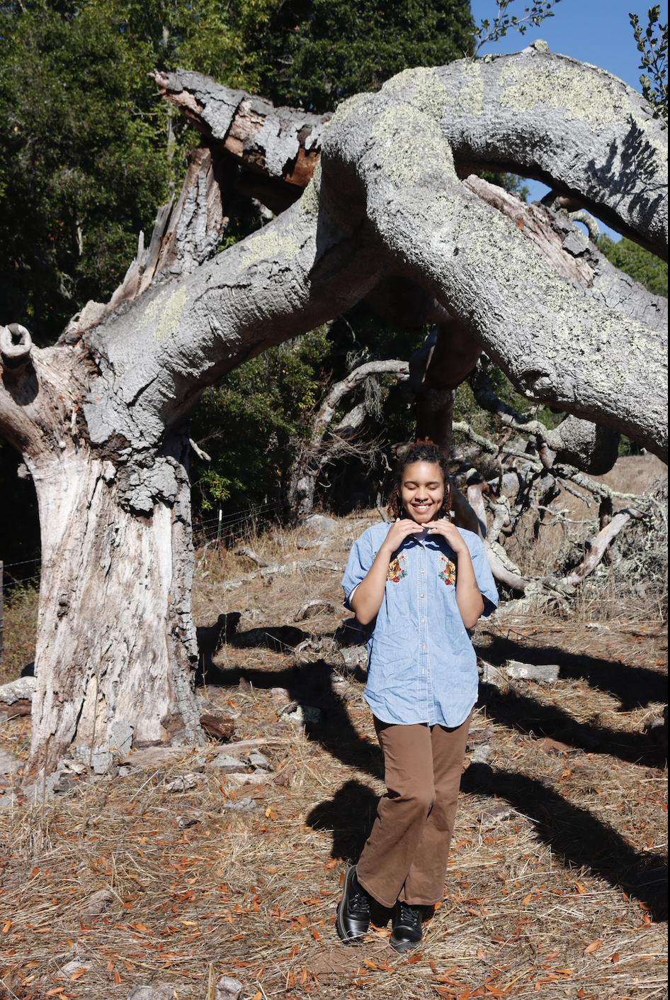

About Me!

Hi my name is Monique and I'm a 4th year art major. My medium of choice is acryilic painting and I enjoy painting landscapes and animals. My favorite color is cyan and my favorite animal is a Giraffe. It is a big dream of mine to one day be able to ride one. I really enjoy thinking about food, talking about food, and eating food. My favorite food depends on my mood, but I really enjoy sushi and burritos.